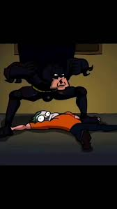
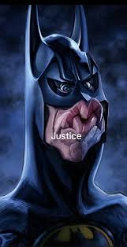

Quem é o Batman?
Batman (Bruce Wayne) é um personagem da DC Comics e atua como justiceiro (sem ninguém ter pedido isso a ele) de Gotham. Ele não tem super poderes:sua força está em treinamento, tecnologia e riqueza (muita riqueza).
Em varias historias, Gotham representa problemas sociais: desigualdade, corrupção e violenci urbana.Alguns quadrinhos usam o batman como forma de critica social, mostrando como falhas nas instituiçoes, interesseseconomicos e auoritarismo afetam principalmnente quem tem menos direitos e oportunidades.
Galeria de Imagens

